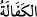
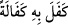
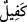
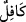
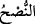

vermesi anlamına gelir.
Âdet olan çocuğun bakımını annesinin yapmasıdır. Zira hadiste şöyle buyrulmuştur:
“Çocuk için annesinin sütünden daha hayırlısı yoktur. Yahut onu saliha ve iyi bir
kadın emzirir. Ahmak ve kaba bir kadının sütü ile beslenen bir çocuğa bu durum
sirâyet eder ve ahmaklığın eseri bir gün mutlaka onun üzerinde görülür.” [95]
Yine başka bir hadîs: “Süt emme, tabiatı değiştirir.” [96] buyrulmuştur.
İşte bu yüzden Şeyh Ebû Muhammed Cüveynî evine girince, oğlu İmam Ebu’l-
Meâlî’yi annesinden başka bir kadının memesini emerken gördü; hemen çocuğu onun
elinden aldı, başını eğdirip karnını meshedip parmağını ağzına soktu ve emdiği süt
çıkıncaya kadar böyle yapmaya devam etti. Ve şöyle dedi: “Annesinden başka bir
kadının sütünü içerek ahlakının bozulmasındansa ölmesi daha iyidir.” Sonra imam
büyüyünce ilmî münâkaşalarda kendisine ne zaman bir durgunluk ve bir tereddüd hâli
vuku bulsa şöyle derdi: “Bu hal, o emmenin artıklarındandır.” Nitekim el-Mekâasidü’l-
hasene’de şöyle denilmiştir: Emziren kadının bazı âdet ve özellikleri emen çocuğa
geçer ve o âdet ve özellikler iyi olsun kötü olsun mutlaka çocukta ortaya çıkar.
“Bunun üzerine” yâni Mûsâ’nın başkasının memesini kabul etmediğini, Firavun’un da
bu işe önem verdiğini ve memesini kabul edeceği bir süt anne aradığını görünce,
“ablası” yâni kız kardeşi dedi ki:
“Size, onun bakımını” yâni emzirme işini “namınıza üstlenecek; hem de ona iyi
davranacak;” öğüt verip onu güzelce eğitecek” bir âile göstereyim mi? dedi.”
“__WORD__ kelimesi, kefil olmak ve taahhüd etmek; bakmak ve beslemek mânâlarına gelir.
Bir kimsenin kefâletini üstlendiği ve kabul ettiği zaman: “__WORD__ (Ona kefil oldu)”
denilir. Bir kimsenin sorumluluğunu üslenen kişiye “__WORD__ (kefil)” denir. “__WORD__ ise “birini
bakıp besleyen” kimse için kullanılır. Yani, o âile, çocuğu yetiştirsin ve büyütsün. Sizin
için süt emzirme işini yerine getirsin. Onun işine, bütün samîmiyet ve gayretleriyle
sarılsın; emzirme ve yetiştirilmesinde noksan yapmasın. “__WORD__ (nush)” kavramı,
“aldatma”nın zıddı olup “doğru ve samimi olmak” mânâsına gelir. Ameli fesad ve bozuk
şeylerden temizlemek ve tasfiye etmektir. el-Müfredât’ta der ki: “__WORD__ (nush)”,
sâhibinin salâhına sebep olan söz veya fiili aramaktır.
Rivâyete göre Firavun ve yakınları, Mûsâ’nın kızkardeşine: “Bakımını kim
üstlenecek?” diye sorunca, o da “annem” dedi. Onlar, “onun sütü var mı?” dediler. O
da: “Evet, Hârun’un sütü” dedi. Hârun’un doğumu, çocukların öldürülmediği yıla
tesadüf etmişti. Bunun üzerine, “doğru söyledin” dediler.
Fethu’r-rahman’da der ki: Mûsâ’nın kız kardeşi onlara şöyle dedi: “O, çocuğu
öldürülen bir kadındır. Şimdi en sevdiği şey, emzireceği küçük bir çocuk bulmaktır.”
Fakir (Bursevî) der ki: Birincisi, doğruya daha yakındır. Ancak, çocuğun Nil’e
bırakılıp kaybolması, onu öldürme şeklinde de yorumlanabilir.
Rivâyete göre Hâmân, onu dinleyince dedi ki: “Bu kız, çocuğu ve âilesini tanıyor; onu